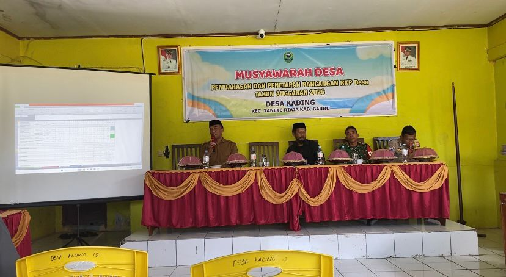

Musyawarah Desa Dalam Rangka Pembahasan dan Penetapatan Rancangan RKP Desa Kading Tahun Anggaran 2026
Desa Kading, Kabupaten Barru — 29 September 2025
Pemerintah Desa Kading menggelar Musyawarah Desa khusus untuk membahas dan menetapkan Rancangan Rencana Kerja Pemerintah (RKP) Desa Tahun Anggaran 2026. Kegiatan ini dilaksanakan di Balai Desa Kading pada tanggal 29 September 2025 dengan dihadiri Kepala Desa(H. Akmaluddin, S.Sos), perangkat desa, Badan Permusyawaratan Desa (BPD), perwakilan lembaga desa, tokoh masyarakat, Babinsa & Bhabinkatibmas, serta perwakilan pemuda dan perempuan.